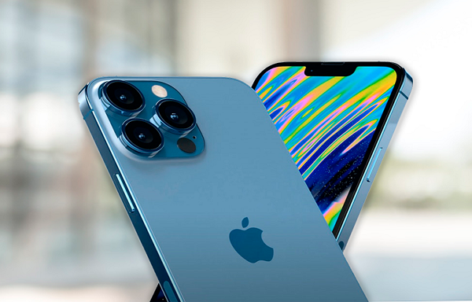
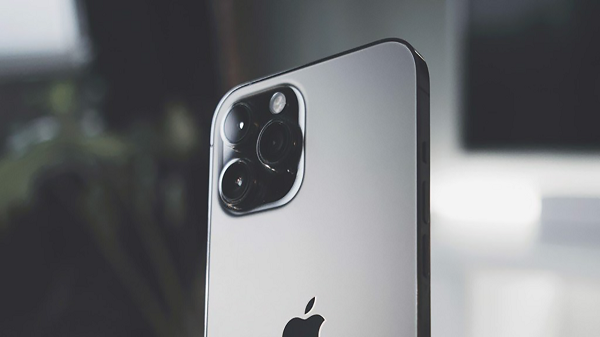
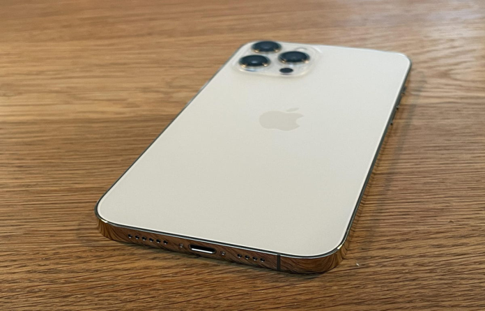

Tại sự kiện Peek Performance diễn ra vào tháng 3 vừa qua, Apple đã chính thức giới thiệu iPhone 13 Pro Max màu xanh lá. Với màn ra mắt này đã nâng tổng số phiên bản Flagship cao cấp này lên 5 màu sắc tạo nên sự đa dạng cho người dùng lựa chọn. Cùng ShopDunk tham khảo ngay bài viết dưới đây nhé!
Đây không phải là lần đầu tiên chúng ta bắt gặp màu xanh dương trong thiết kế của Apple, trước đây thì chúng ta đã có iPhone 12 Pro Max với màu xanh Pacific Blue nổi bật.
Với iPhone 13 Pro Max, Apple đem tới một màu xanh mới hơn với tên gọi Sierra Blue, thể hiện sự cân bằng khi không quá sặc sỡ nhưng vẫn thu hút mọi ánh nhìn.

<iPhone 13 Pro Max màu Sierra Blue
Nếu bạn là một người thích nét thanh lịch, vừa muốn sự an toàn lại vừa muốn nổi bật thì màu xanh này chắc chắn sẽ là một sự lựa chọn phù hợp. Thêm nữa, khi cầm iPhone 13 Pro Max màu Sierra Blue trên tay là mọi người đều nhận ra đây là iPhone mới nhất hiện nay.
Graphite là màu sắc này vô cùng phù hợp với chất liệu nhôm kim loại mà iPhone hay sử dụng. Ưu điểm của màu Graphite Black không dễ bị bám vân tay, vì thế chiếc iPhone sẽ luôn trong tình trạng sạch sẽ.

Phiên bản màu đen nhám: Graphite Black
Hơn nữa, màu đen trở lại cũng đem đến sự đẳng cấp và thanh lịch cho dòng Pro Max. Đa số các sản phẩm cao cấp đều có màu đen, mẫu smartphone iPhone 13 Pro Max màu đen này sẽ rất thích hợp với các bạn nam.

iPhone 13 Pro Max màu Gold